| Name | Unicode | Glyph | Unicode Name | Description | Aliases |
|---|
| ape | U+224A |  | ALMOST EQUAL OR EQUAL TO | /approxeq R: approximate, equals | approxeq |
| apE | U+2A70 |  | APPROXIMATELY EQUAL OR EQUAL TO | approximately equal or equal to | |
| apid | U+224B | 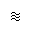 | TRIPLE TILDE | approximately identical to | |
| asymp | U+2248 |  | ALMOST EQUAL TO | /asymp R: asymptotically equal to | ap, TildeTilde, approx, thkap, thickapprox |
| Barv | U+2AE7 |  | SHORT DOWN TACK WITH OVERBAR | vert, dbl bar (over) | |
| bcong | U+224C | 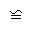 | ALL EQUAL TO | /backcong R: reverse congruent | backcong |
| bepsi | U+03F6 |  | GREEK REVERSED LUNATE EPSILON SYMBOL | /backepsilon R: such that | backepsilon |
| bowtie | U+22C8 |  | BOWTIE | /bowtie R: | |
| bsim | U+223D |  | REVERSED TILDE | /backsim R: reverse similar | backsim |
| bsime | U+22CD |  | REVERSED TILDE EQUALS | /backsimeq R: reverse similar, eq | backsimeq |
| bsolhsub | U+27C8 | 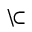 | REVERSE SOLIDUS PRECEDING SUBSET | reverse solidus, subset | |
| bump | U+224E |  | GEOMETRICALLY EQUIVALENT TO | /Bumpeq R: bumpy equals | HumpDownHump, Bumpeq |
| bumpe | U+224F |  | DIFFERENCE BETWEEN | /bumpeq R: bumpy equals, equals | HumpEqual, bumpeq |
| bumpE | U+2AAE |  | EQUALS SIGN WITH BUMPY ABOVE | bump, equals | |
| cire | U+2257 |  | RING EQUAL TO | /circeq R: circle, equals | circeq |
| Colon | U+2237 |  | PROPORTION | /Colon, two colons | Proportion |
| colone | U+2254 | 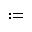 | COLON EQUALS | /coloneq R: colon, equals | coloneq, Assign |
| Colone | U+2A74 |  | DOUBLE COLON EQUAL | double colon, equals | |
| congdot | U+2A6D |  | CONGRUENT WITH DOT ABOVE | congruent, dot | |
| csub | U+2ACF |  | CLOSED SUBSET | subset, closed | |
| csube | U+2AD1 |  | CLOSED SUBSET OR EQUAL TO | subset, closed, equals | |
| csup | U+2AD0 |  | CLOSED SUPERSET | superset, closed | |
| csupe | U+2AD2 |  | CLOSED SUPERSET OR EQUAL TO | superset, closed, equals | |
| cuepr | U+22DE |  | EQUAL TO OR PRECEDES | /curlyeqprec R: curly eq, precedes | curlyeqprec |
| cuesc | U+22DF |  | EQUAL TO OR SUCCEEDS | /curlyeqsucc R: curly eq, succeeds | curlyeqsucc |
| dashv | U+22A3 |  | LEFT TACK | /dashv R: dash, vertical | LeftTee |
| Dashv | U+2AE4 |  | VERTICAL BAR DOUBLE LEFT TURNSTILE | dbl dash, vertical | DoubleLeftTee |
| easter | U+2A6E |  | EQUALS WITH ASTERISK | equal, asterisk above | |
| ecir | U+2256 | 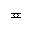 | RING IN EQUAL TO | /eqcirc R: circle on equals sign | eqcirc |
| ecolon | U+2255 |  | EQUALS COLON | /eqcolon R: equals, colon | eqcolon |
| eDDot | U+2A77 |  | EQUALS SIGN WITH TWO DOTS ABOVE AND TWO DOTS BELOW | /ddotseq R: equal with four dots | ddotseq |
| eDot | U+2251 |  | GEOMETRICALLY EQUAL TO | /doteqdot /Doteq R: eq, even dots | doteqdot |
| efDot | U+2252 |  | APPROXIMATELY EQUAL TO OR THE IMAGE OF | /fallingdotseq R: eq, falling dots | fallingdotseq |
| eg | U+2A9A |  | DOUBLE-LINE EQUAL TO OR GREATER-THAN | equal-or-greater | |
| egs | U+2A96 |  | SLANTED EQUAL TO OR GREATER-THAN | /eqslantgtr R: equal-or-gtr, slanted | eqslantgtr |
| egsdot | U+2A98 |  | SLANTED EQUAL TO OR GREATER-THAN WITH DOT INSIDE | equal-or-greater, slanted, dot inside | |
| el | U+2A99 |  | DOUBLE-LINE EQUAL TO OR LESS-THAN | equal-or-less | |
| els | U+2A95 |  | SLANTED EQUAL TO OR LESS-THAN | /eqslantless R: eq-or-less, slanted | eqslantless |
| elsdot | U+2A97 |  | SLANTED EQUAL TO OR LESS-THAN WITH DOT INSIDE | equal-or-less, slanted, dot inside | |
| equest | U+225F |  | QUESTIONED EQUAL TO | /questeq R: equal with questionmark | questeq |
| equivDD | U+2A78 |  | EQUIVALENT WITH FOUR DOTS ABOVE | equivalent, four dots above | |
| erDot | U+2253 |  | IMAGE OF OR APPROXIMATELY EQUAL TO | /risingdotseq R: eq, rising dots | risingdotseq |
| esdot | U+2250 |  | APPROACHES THE LIMIT | /doteq R: equals, single dot above | DotEqual, doteq |
| esim | U+2242 |  | MINUS TILDE | /esim R: equals, similar | EqualTilde, eqsim |
| Esim | U+2A73 |  | EQUALS SIGN ABOVE TILDE OPERATOR | equal, similar | |
| fork | U+22D4 | 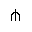 | PITCHFORK | /pitchfork R: pitchfork | pitchfork |
| forkv | U+2AD9 |  | ELEMENT OF OPENING DOWNWARDS | fork, variant | |
| frown | U+2322 | 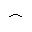 | FROWN | /frown R: down curve | sfrown |
| gap | U+2A86 |  | GREATER-THAN OR APPROXIMATE | /gtrapprox R: greater, approximate | gtrapprox |
| gE | U+2267 |  | GREATER-THAN OVER EQUAL TO | /geqq R: greater, double equals | GreaterFullEqual, geqq |
| gel | U+22DB |  | GREATER-THAN EQUAL TO OR LESS-THAN | /gtreqless R: greater, equals, less | gtreqless, GreaterEqualLess |
| gEl | U+2A8C |  | GREATER-THAN ABOVE DOUBLE-LINE EQUAL ABOVE LESS-THAN | /gtreqqless R: gt, dbl equals, less | gtreqqless |
| ges | U+2A7E |  | GREATER-THAN OR SLANTED EQUAL TO | /geqslant R: gt-or-equal, slanted | GreaterSlantEqual, geqslant |
| gescc | U+2AA9 |  | GREATER-THAN CLOSED BY CURVE ABOVE SLANTED EQUAL | greater than, closed by curve, equal, slanted | |
| gesdot | U+2A80 |  | GREATER-THAN OR SLANTED EQUAL TO WITH DOT INSIDE | greater-than-or-equal, slanted, dot inside | |
| gesdoto | U+2A82 |  | GREATER-THAN OR SLANTED EQUAL TO WITH DOT ABOVE | greater-than-or-equal, slanted, dot above | |
| gesdotol | U+2A84 |  | GREATER-THAN OR SLANTED EQUAL TO WITH DOT ABOVE LEFT | greater-than-or-equal, slanted, dot above left | |
| gesl | U+22DB U+FE00 |  | GREATER-THAN slanted EQUAL TO OR LESS-THAN | greater, equal, slanted, less | |
| gesles | U+2A94 |  | GREATER-THAN ABOVE SLANTED EQUAL ABOVE LESS-THAN ABOVE SLANTED EQUAL | greater, equal, slanted, less, equal, slanted | |
| Gg | U+22D9 | | VERY MUCH GREATER-THAN | /ggg /Gg /gggtr R: triple gtr-than | ggg |
| gl | U+2277 |  | GREATER-THAN OR LESS-THAN | /gtrless R: greater, less | gtrless, GreaterLess |
| gla | U+2AA5 |  | GREATER-THAN BESIDE LESS-THAN | greater, less, apart | |
| glE | U+2A92 |  | GREATER-THAN ABOVE LESS-THAN ABOVE DOUBLE-LINE EQUAL | greater, less, equal | |
| glj | U+2AA4 |  | GREATER-THAN OVERLAPPING LESS-THAN | greater, less, overlapping | |
| gsim | U+2273 |  | GREATER-THAN OR EQUIVALENT TO | /gtrsim R: greater, similar | gtrsim, GreaterTilde |
| gsime | U+2A8E |  | GREATER-THAN ABOVE SIMILAR OR EQUAL | greater, similar, equal | |
| gsiml | U+2A90 |  | GREATER-THAN ABOVE SIMILAR ABOVE LESS-THAN | greater, similar, less | |
| Gt | U+226B |  | MUCH GREATER-THAN | /gg R: dbl greater-than sign | NestedGreaterGreater, gg |
| gtcc | U+2AA7 |  | GREATER-THAN CLOSED BY CURVE | greater than, closed by curve | |
| gtcir | U+2A7A |  | GREATER-THAN WITH CIRCLE INSIDE | greater than, circle inside | |
| gtdot | U+22D7 |  | GREATER-THAN WITH DOT | /gtrdot R: greater than, with dot | gtrdot |
| gtquest | U+2A7C |  | GREATER-THAN WITH QUESTION MARK ABOVE | greater than, questionmark above | |
| gtrarr | U+2978 |  | GREATER-THAN ABOVE RIGHTWARDS ARROW | greater than, right arrow | |
| homtht | U+223B |  | HOMOTHETIC | homothetic | |
| lap | U+2A85 |  | LESS-THAN OR APPROXIMATE | /lessapprox R: less, approximate | lessapprox |
| lat | U+2AAB |  | LARGER THAN | larger than | |
| late | U+2AAD |  | LARGER THAN OR EQUAL TO | larger than or equal | |
| lates | U+2AAD U+FE00 |  | LARGER THAN OR slanted EQUAL | larger than or equal, slanted | |
| lE | U+2266 |  | LESS-THAN OVER EQUAL TO | /leqq R: less, double equals | LessFullEqual, leqq |
| leg | U+22DA |  | LESS-THAN EQUAL TO OR GREATER-THAN | /lesseqgtr R: less, eq, greater | LessEqualGreater, lesseqgtr |
| lEg | U+2A8B |  | LESS-THAN ABOVE DOUBLE-LINE EQUAL ABOVE GREATER-THAN | /lesseqqgtr R: less, dbl eq, greater | lesseqqgtr |
| les | U+2A7D |  | LESS-THAN OR SLANTED EQUAL TO | /leqslant R: less-than-or-eq, slant | LessSlantEqual, leqslant |
| lescc | U+2AA8 |  | LESS-THAN CLOSED BY CURVE ABOVE SLANTED EQUAL | less than, closed by curve, equal, slanted | |
| lesdot | U+2A7F |  | LESS-THAN OR SLANTED EQUAL TO WITH DOT INSIDE | less-than-or-equal, slanted, dot inside | |
| lesdoto | U+2A81 |  | LESS-THAN OR SLANTED EQUAL TO WITH DOT ABOVE | less-than-or-equal, slanted, dot above | |
| lesdotor | U+2A83 |  | LESS-THAN OR SLANTED EQUAL TO WITH DOT ABOVE RIGHT | less-than-or-equal, slanted, dot above right | |
| lesg | U+22DA U+FE00 | 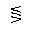 | LESS-THAN slanted EQUAL TO OR GREATER-THAN | less, equal, slanted, greater | |
| lesges | U+2A93 |  | LESS-THAN ABOVE SLANTED EQUAL ABOVE GREATER-THAN ABOVE SLANTED EQUAL | less, equal, slanted, greater, equal, slanted | |
| lg | U+2276 |  | LESS-THAN OR GREATER-THAN | /lessgtr R: less, greater | lessgtr, LessGreater |
| lgE | U+2A91 |  | LESS-THAN ABOVE GREATER-THAN ABOVE DOUBLE-LINE EQUAL | less, greater, equal | |
| Ll | U+22D8 |  | VERY MUCH LESS-THAN | /Ll /lll /llless R: triple less-than | |
| lsim | U+2272 | 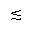 | LESS-THAN OR EQUIVALENT TO | /lesssim R: less, similar | LessTilde, lesssim |
| lsime | U+2A8D |  | LESS-THAN ABOVE SIMILAR OR EQUAL | less, similar, equal | |
| lsimg | U+2A8F |  | LESS-THAN ABOVE SIMILAR ABOVE GREATER-THAN | less, similar, greater | |
| Lt | U+226A | | MUCH LESS-THAN | /ll R: double less-than sign | NestedLessLess, ll |
| ltcc | U+2AA6 |  | LESS-THAN CLOSED BY CURVE | less than, closed by curve | |
| ltcir | U+2A79 |  | LESS-THAN WITH CIRCLE INSIDE | less than, circle inside | |
| ltdot | U+22D6 |  | LESS-THAN WITH DOT | /lessdot R: less than, with dot | lessdot |
| ltlarr | U+2976 |  | LESS-THAN ABOVE LEFTWARDS ARROW | less than, left arrow | |
| ltquest | U+2A7B |  | LESS-THAN WITH QUESTION MARK ABOVE | less than, questionmark above | |
| ltrie | U+22B4 |  | NORMAL SUBGROUP OF OR EQUAL TO | /trianglelefteq R: left triangle, eq | trianglelefteq, LeftTriangleEqual |
| mcomma | U+2A29 |  | MINUS SIGN WITH COMMA ABOVE | minus, comma above | |
| mDDot | U+223A | 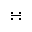 | GEOMETRIC PROPORTION | minus with four dots, geometric properties | |
| mid | U+2223 |  | DIVIDES | /mid R: | VerticalBar, smid, shortmid |
| mlcp | U+2ADB |  | TRANSVERSAL INTERSECTION | /mlcp | |
| models | U+22A7 |  | MODELS | /models R: | |
| mstpos | U+223E |  | INVERTED LAZY S | most positive | ac |
| pr | U+227A | 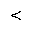 | PRECEDES | /prec R: precedes | Precedes, prec |
| Pr | U+2ABB |  | DOUBLE PRECEDES | dbl precedes | |
| prap | U+2AB7 |  | PRECEDES ABOVE ALMOST EQUAL TO | /precapprox R: precedes, approximate | precapprox |
| prcue | U+227C |  | PRECEDES OR EQUAL TO | /preccurlyeq R: precedes, curly eq | PrecedesSlantEqual, preccurlyeq |
| pre | U+2AAF |  | PRECEDES ABOVE SINGLE-LINE EQUALS SIGN | /preceq R: precedes, equals | preceq, PrecedesEqual |
| prE | U+2AB3 |  | PRECEDES ABOVE EQUALS SIGN | precedes, dbl equals | |
| prsim | U+227E |  | PRECEDES OR EQUIVALENT TO | /precsim R: precedes, similar | precsim, PrecedesTilde |
| prurel | U+22B0 |  | PRECEDES UNDER RELATION | element precedes under relation | |
| ratio | U+2236 |  | RATIO | /ratio | |
| rtrie | U+22B5 |  | CONTAINS AS NORMAL SUBGROUP OR EQUAL TO | /trianglerighteq R: right tri, eq | trianglerighteq, RightTriangleEqual |
| rtriltri | U+29CE |  | RIGHT TRIANGLE ABOVE LEFT TRIANGLE | right triangle above left triangle | |
| sc | U+227B |  | SUCCEEDS | /succ R: succeeds | Succeeds, succ |
| Sc | U+2ABC |  | DOUBLE SUCCEEDS | dbl succeeds | |
| scap | U+2AB8 |  | SUCCEEDS ABOVE ALMOST EQUAL TO | /succapprox R: succeeds, approximate | succapprox |
| sccue | U+227D | 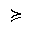 | SUCCEEDS OR EQUAL TO | /succcurlyeq R: succeeds, curly eq | SucceedsSlantEqual, succcurlyeq |
| sce | U+2AB0 |  | SUCCEEDS ABOVE SINGLE-LINE EQUALS SIGN | /succeq R: succeeds, equals | succeq, SucceedsEqual |
| scE | U+2AB4 |  | SUCCEEDS ABOVE EQUALS SIGN | succeeds, dbl equals | |
| scsim | U+227F |  | SUCCEEDS OR EQUIVALENT TO | /succsim R: succeeds, similar | succsim, SucceedsTilde |
| sdote | U+2A66 |  | EQUALS SIGN WITH DOT BELOW | equal, dot below | |
| sfrown | U+2322 | | FROWN | /smallfrown R: small down curve | frown |
| simg | U+2A9E |  | SIMILAR OR GREATER-THAN | similar, greater | |
| simgE | U+2AA0 |  | SIMILAR ABOVE GREATER-THAN ABOVE EQUALS SIGN | similar, greater, equal | |
| siml | U+2A9D |  | SIMILAR OR LESS-THAN | similar, less | |
| simlE | U+2A9F |  | SIMILAR ABOVE LESS-THAN ABOVE EQUALS SIGN | similar, less, equal | |
| smid | U+2223 | | DIVIDES | /shortmid R: | mid, VerticalBar, shortmid |
| smile | U+2323 | | SMILE | /smile R: up curve | ssmile |
| smt | U+2AAA |  | SMALLER THAN | smaller than | |
| smte | U+2AAC |  | SMALLER THAN OR EQUAL TO | smaller than or equal | |
| smtes | U+2AAC U+FE00 |  | SMALLER THAN OR slanted EQUAL | smaller than or equal, slanted | |
| spar | U+2225 |  | PARALLEL TO | /shortparallel R: short parallel | par, parallel, DoubleVerticalBar, shortparallel |
| sqsub | U+228F |  | SQUARE IMAGE OF | /sqsubset R: square subset | SquareSubset, sqsubset |
| sqsube | U+2291 | 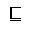 | SQUARE IMAGE OF OR EQUAL TO | /sqsubseteq R: square subset, equals | SquareSubsetEqual, sqsubseteq |
| sqsup | U+2290 |  | SQUARE ORIGINAL OF | /sqsupset R: square superset | SquareSuperset, sqsupset |
| sqsupe | U+2292 |  | SQUARE ORIGINAL OF OR EQUAL TO | /sqsupseteq R: square superset, eq | SquareSupersetEqual, sqsupseteq |
| ssmile | U+2323 | | SMILE | /smallsmile R: small up curve | smile |
| Sub | U+22D0 |  | DOUBLE SUBSET | /Subset R: double subset | Subset |
| subE | U+2AC5 |  | SUBSET OF ABOVE EQUALS SIGN | /subseteqq R: subset, dbl equals | subseteqq |
| subedot | U+2AC3 |  | SUBSET OF OR EQUAL TO WITH DOT ABOVE | subset, equals, dot | |
| submult | U+2AC1 |  | SUBSET WITH MULTIPLICATION SIGN BELOW | subset, multiply | |
| subplus | U+2ABF |  | SUBSET WITH PLUS SIGN BELOW | subset, plus | |
| subrarr | U+2979 |  | SUBSET ABOVE RIGHTWARDS ARROW | subset, right arrow | |
| subsim | U+2AC7 |  | SUBSET OF ABOVE TILDE OPERATOR | subset, similar | |
| subsub | U+2AD5 |  | SUBSET ABOVE SUBSET | subset above subset | |
| subsup | U+2AD3 |  | SUBSET ABOVE SUPERSET | subset above superset | |
| Sup | U+22D1 | 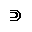 | DOUBLE SUPERSET | /Supset R: dbl superset | Supset |
| supdsub | U+2AD8 |  | SUPERSET BESIDE AND JOINED BY DASH WITH SUBSET | superset, subset, dash joining them | |
| supE | U+2AC6 |  | SUPERSET OF ABOVE EQUALS SIGN | /supseteqq R: superset, dbl equals | supseteqq |
| supedot | U+2AC4 |  | SUPERSET OF OR EQUAL TO WITH DOT ABOVE | superset, equals, dot | |
| suphsol | U+27C9 |  | SUPERSET PRECEDING SOLIDUS | superset, solidus | |
| suphsub | U+2AD7 |  | SUPERSET BESIDE SUBSET | superset, subset | |
| suplarr | U+297B |  | SUPERSET ABOVE LEFTWARDS ARROW | superset, left arrow | |
| supmult | U+2AC2 |  | SUPERSET WITH MULTIPLICATION SIGN BELOW | superset, multiply | |
| supplus | U+2AC0 |  | SUPERSET WITH PLUS SIGN BELOW | superset, plus | |
| supsim | U+2AC8 |  | SUPERSET OF ABOVE TILDE OPERATOR | superset, similar | |
| supsub | U+2AD4 |  | SUPERSET ABOVE SUBSET | superset above subset | |
| supsup | U+2AD6 |  | SUPERSET ABOVE SUPERSET | superset above superset | |
| thkap | U+2248 | | ALMOST EQUAL TO | /thickapprox R: thick approximate | asymp, ap, TildeTilde, approx, thickapprox |
| thksim | U+223C |  | TILDE OPERATOR | /thicksim R: thick similar | sim, Tilde, thicksim |
| topfork | U+2ADA |  | PITCHFORK WITH TEE TOP | fork with top | |
| trie | U+225C |  | DELTA EQUAL TO | /triangleq R: triangle, equals | triangleq |
| twixt | U+226C |  | BETWEEN | /between R: between | between |
| vBar | U+2AE8 |  | SHORT UP TACK WITH UNDERBAR | vert, dbl bar (under) | |
| Vbar | U+2AEB |  | DOUBLE UP TACK | dbl vert, bar (under) | |
| vBarv | U+2AE9 |  | SHORT UP TACK ABOVE SHORT DOWN TACK | dbl bar, vert over and under | |
| vdash | U+22A2 |  | RIGHT TACK | /vdash R: vertical, dash | RightTee |
| vDash | U+22A8 |  | TRUE | /vDash R: vertical, dbl dash | DoubleRightTee |
| Vdash | U+22A9 | 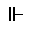 | FORCES | /Vdash R: dbl vertical, dash | |
| VDash | U+22AB |  | DOUBLE VERTICAL BAR DOUBLE RIGHT TURNSTILE | dbl vert, dbl dash | |
| Vdashl | U+2AE6 |  | LONG DASH FROM LEFT MEMBER OF DOUBLE VERTICAL | vertical, dash (long) | |
| vltri | U+22B2 |  | NORMAL SUBGROUP OF | /vartriangleleft R: l tri, open, var | vartriangleleft, LeftTriangle |
| vprop | U+221D |  | PROPORTIONAL TO | /varpropto R: proportional, variant | prop, propto, Proportional, varpropto |
| vrtri | U+22B3 |  | CONTAINS AS NORMAL SUBGROUP | /vartriangleright R: r tri, open, var | vartriangleright, RightTriangle |
| Vvdash | U+22AA | 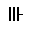 | TRIPLE VERTICAL BAR RIGHT TURNSTILE | /Vvdash R: triple vertical, dash | |